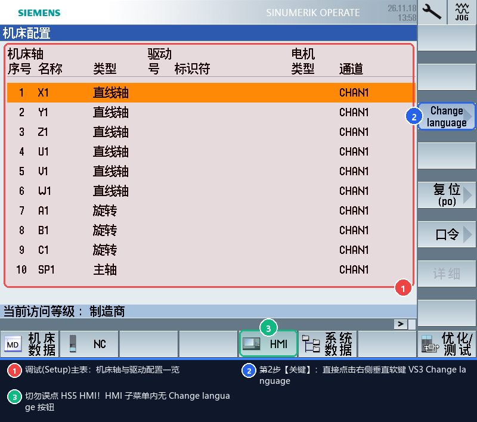
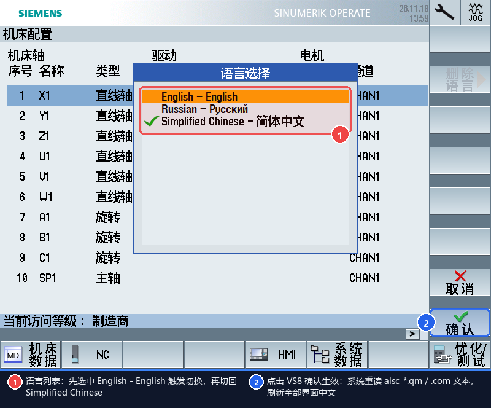
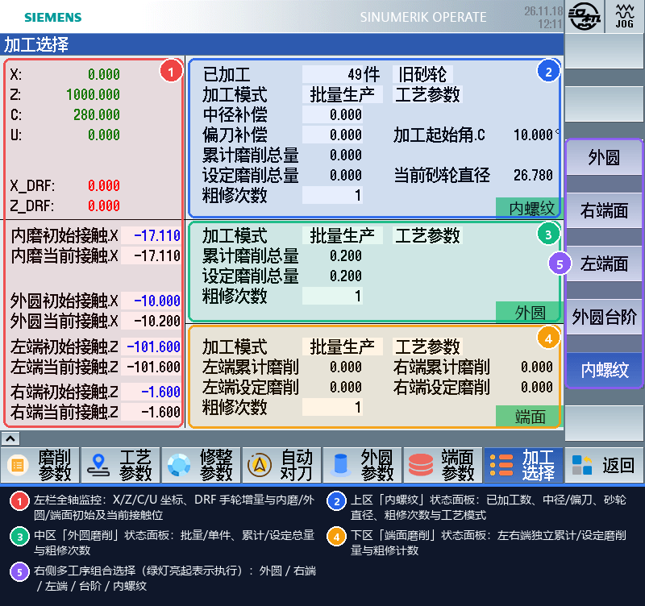

4.2 SinuTrain 4.8 SP4 仿真导入与缓存刷新
对于售前方案演示、界面排布验收或参数逻辑测试，强烈建议先利用虚拟机或本机安装的 SinuTrain for SINUMERIK Operate 840D sl 4.8 SP4 完成全套画面与流程预演，再前往真机调试。
1. 标准软件运行环境
- SinuTrain 启动程序路径：
C:\Program Files (x86)\Siemens\SinuTrain\SinuTrain Workbench\sinutrain.exe - 目标 HMI 根目录路径：
C:\Siemens\SinuTrain\SINUMERIK CNC-SW 840D sl 4.8 SP4\hmi - 推荐生成配置：在
HorizonJuicerCreator中将 系统类型 设为0（828D 老版），生成的System-CF-Card下包含user、oem、siemens全套兼容目录及ico800图标，可直接与 SinuTrain 4.8 SP4 匹配（无分辨率错位）。
2. 导入界面包与清理帮助缓存
- 通过
HorizonJuicerCreator生成所需机型的程序包； - 打开生成的
<程序包根目录>\System-CF-Card\，选中内部全部子文件夹（如oem、siemens、user）； - 将它们直接 复制并合并覆盖 到 SinuTrain 的
hmi目标目录中：C:\Siemens\SinuTrain\SINUMERIK CNC-SW 840D sl 4.8 SP4\hmi - （可选）删除在线帮助缓存：如果同时更新了嵌入式帮助手册或图包，删除
hmi\siemens\sinumerik\sys_cache\hmi\hlp目录； - 若要在仿真中运行 NC 循环测试，请同时在 SinuTrain 界面内的 程序管理器 中按 4.1 节顺序导入并激活
MGUD.DEF与CMA/*.SPF、MPF/*.MPF。
提示：首次覆盖前建议先将
C:\Siemens\SinuTrain\...\hmi下的原有user/oem/siemens做一次本地快照备份，以便多套不同设备包对比测试后随时恢复干净基线。
3. 切换语言热刷新界面文本（关键技巧）
在 SinuTrain 处于运行状态下，每次重复覆盖导入新的 System-CF-Card（尤其是更新了 almc_chs.txt / almc_eng.txt 语言字典或 .com 界面布局后），无需关闭重启整个 SinuTrain 虚拟机，只需通过切换一次 HMI 语言即可立即重新加载全部界面文本与 EasyScreen 配置：

操作步骤如下：
- 在虚拟面板右侧按键区按下
MENU SELECT（或快捷键F10），点击底部水平软键调试（Setup） 进入调试主表界面； - 直接点击右侧垂直软键
VS3 Change language（切换语言）！注意：在 SinuTrain 4.8 SP4 中，
Change language直接位于调试顶层右侧VS3键上，千万不要点击底部水平软键HS5 HMI（进入HMI子菜单后右侧软键会变更，不再显示Change language按钮）。 - 弹出 语言选择 列表窗口后（见下图），选择另一种语言（例如先选中
English - English并点击右下角VS8 确认），等待屏幕闪刷加载完毕；

- 再次点击右侧
VS3 Change language，切换回Simplified Chinese - 简体中文并点VS8 确认刷新文本； - 最后按下虚拟操作面板的
CUSTOM键（或F10 → CUSTOM），即可直接看到最新刷新后的 Horizon-Juicer 定制界面效果（以下为磨削中心加工选择画面实拍）：
